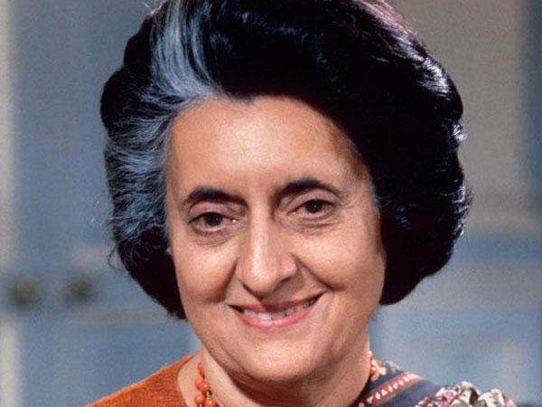
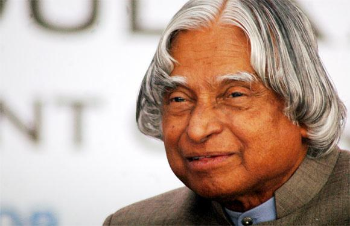

Modi's role in the riots remains a source of controversy. After the BJP won the 2014 Indian general election and Modi was appointed prime minister, Indian Muslims have been the target of increased violence, on which Modi has largely not commented. The policies of the Modi administration have been seen as discriminatory toward India's Muslim minority, and as entrenching a right-wing Hindu-nationalist image of the country. Reporters Without Borders says that press freedom in the country has declined, and that the government has shut down criticism of it on social media. The Modi administration has often put pressure on Twitter to remove tweets the government perceives as critical of Modi or the BJP.The second part, released on 24 January 2023, and also an hour long, examines the activities of Modi's administration following his re-election in 2019. It examines a series of controversial policies.

Indira Priyadarshini Gandhi (listen); née Nehru; 19 November 1917 – 31 October 1984) was an Indian politician and stateswoman who served as the third prime minister of India from 1966 to 1977 and from 1980 until her assassination in 1984. She was India's first and, to date, only female prime minister and a central figure of the Indian National Congress. Gandhi was the daughter of Jawaharlal Nehru, the first prime minister of India, and the mother of Rajiv Gandhi, who succeeded her in office as the country's sixth prime minister. Furthermore, Gandhi's cumulative tenure of 15 years and 350 days makes her the second-longest-serving Indian prime minister after her father.During Nehru's premiership from 1947 to 1964, Gandhi served as his hostess and accompanied him on his numerous foreign trips. In 1959, she played a part in the dissolution of the Communist-led Kerala state government as then-president of the Indian National Congress, otherwise a ceremonial position to which she was elected earlier that year.

Avul Pakir Jainulabdeen Abdul Kalam BR (/ˈɑːbdəl kəˈlɑːm/ (listen); 15 October 1931 – 27 July 2015) was an Indian aerospace scientist and statesman who served as the 11th president of India from 2002 to 2007. He was born and raised in Rameswaram, Tamil Nadu and studied physics and aerospace engineering. He spent the next four decades as a scientist and science administrator, mainly at the Defence Research and Development Organisation (DRDO) and Indian Space Research Organisation (ISRO) and was intimately involved in India's civilian space programme and military missile development efforts.[1] He thus came to be known as the Missile Man of India for his work on the development of ballistic missile and launch vehicle technology.[2][3][4] He also played a pivotal organisational, technical, and political role in India's Pokhran-II nuclear tests in 1998, the first since the original nuclear test by India in 1974.Kalam was elected as the 11th president of India in 2002 with the support of both the ruling Bharatiya Janata Party and the then-opposition Indian National Congress. Widely referred to as the "People's President".